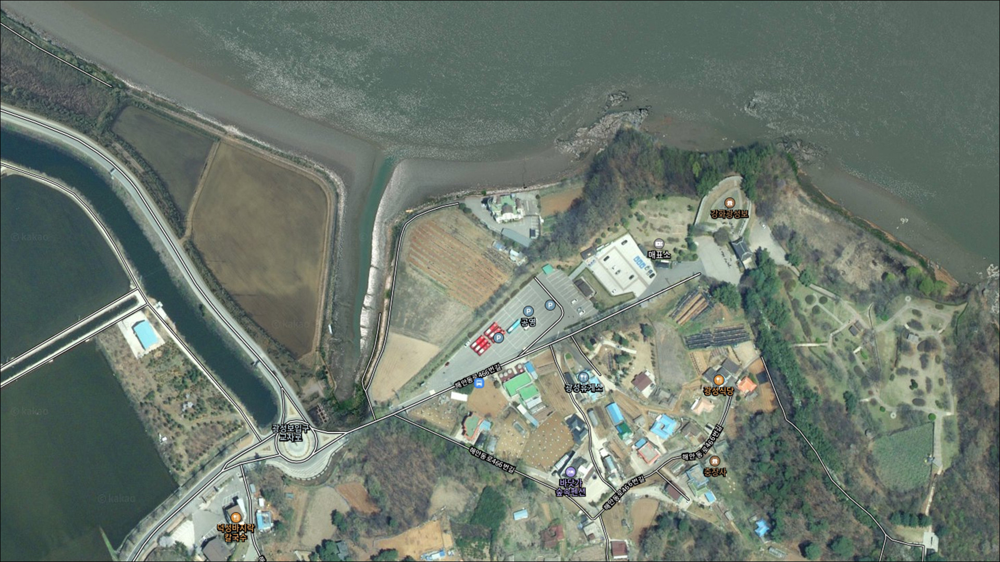
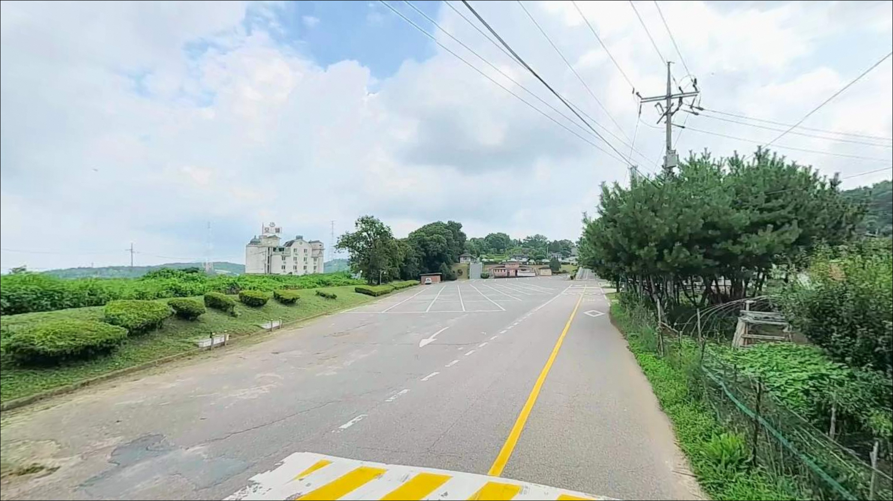
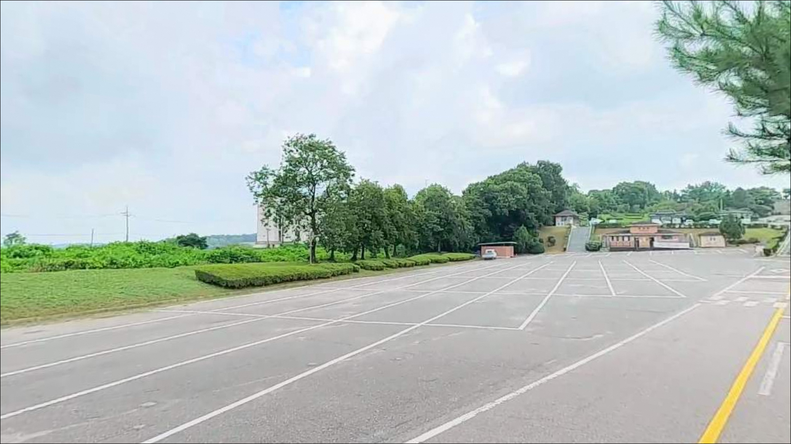
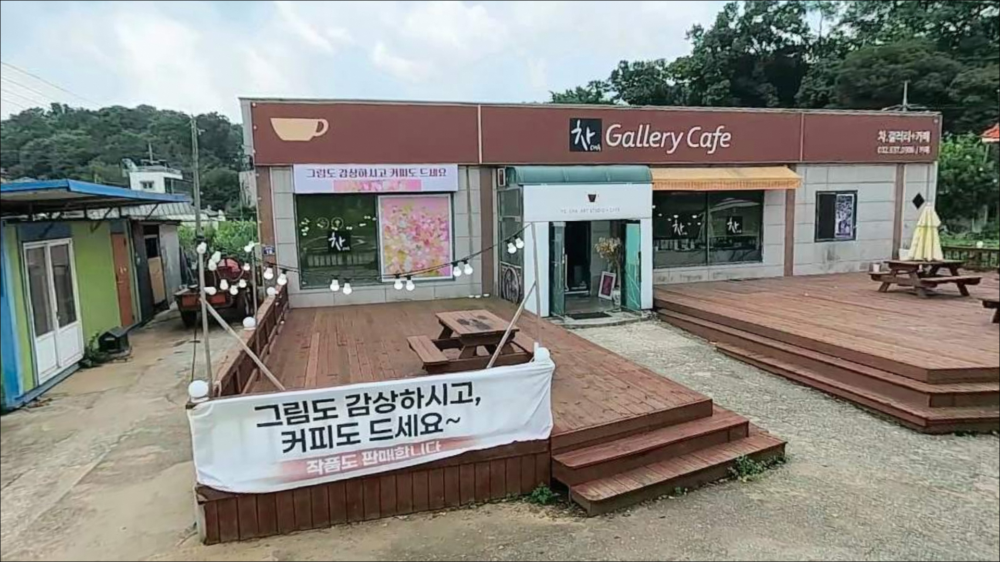
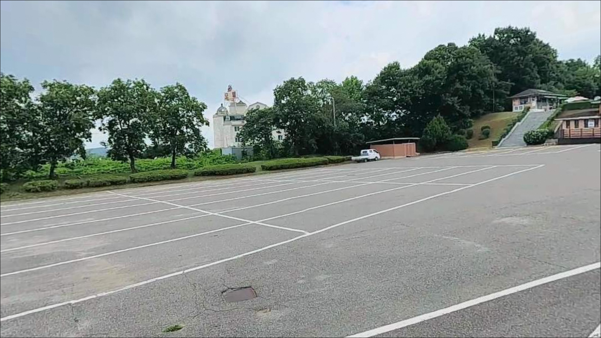
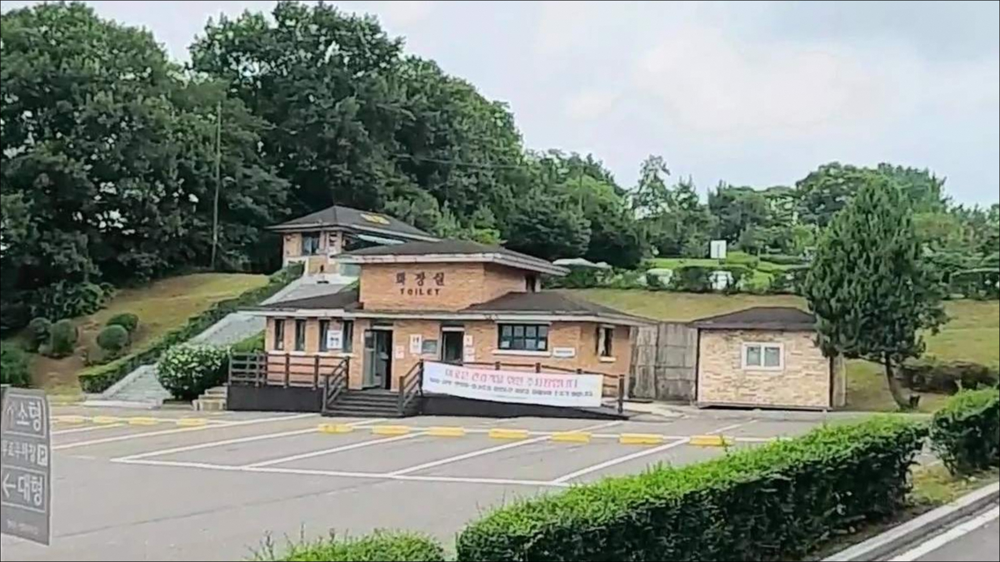
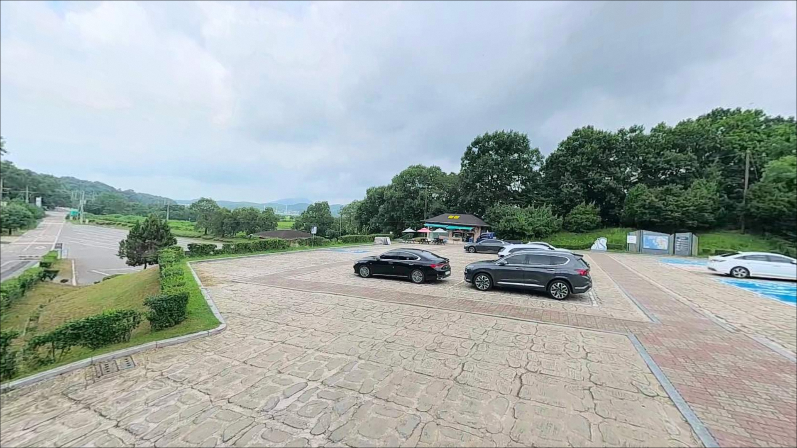
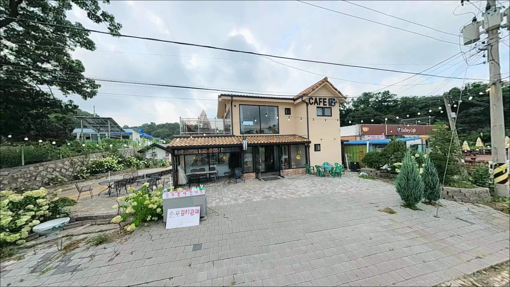
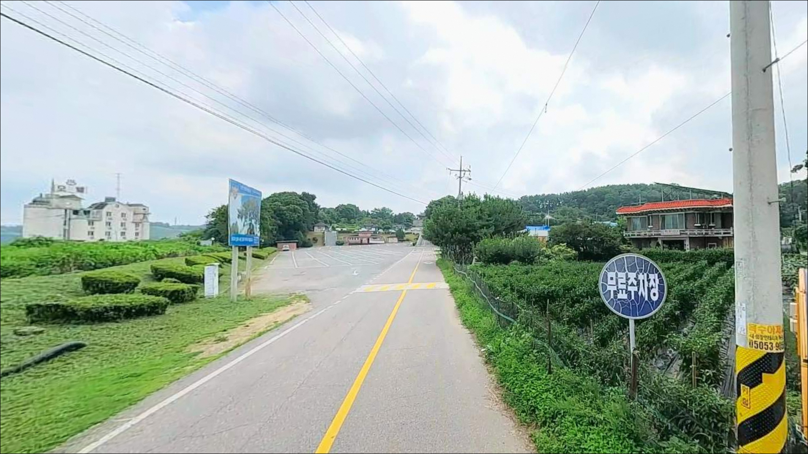

광성보 공영주차장, 강화도 인천 강화군 자연 그대로의 분위기에서 차박, 낚시를 즐기기 좋은 포인트


포인트 안내
광성보 공영주차장
인천 강화군 불은면 덕성리 35-1
사적지 공영주차장 진입 전
야간 게이트 운영 여부를 확인하지 않으면
낚시 장비를 싣고 갔다가 주차장 앞에서
발걸음을 돌려야 하는 상황이 생길 수 있습니다.
광성보 주차장은 국가 사적지 관리 구역 내 공영주차장이라
야간 차단기 운영 가능성을 배제할 수 없는 구조입니다.
다만 낚시 포인트로서의 조건은 나쁘지 않습니다.
염하수로(강화해협)의 조류가 가장 빠르게 집중되는
손돌목 구간과 가까운 해안 석축 자리로,
조류를 타는 원투낚시와 루어낚시 모두
시도해볼 수 있는 구조입니다.
이 글은
광성보 공영주차장의 진입 조건, 낚시 여건, 지형 특성,
그리고 인근 대안 포인트에 집중합니다.
조황 단정이나 특정 어종 보장은 이 글의 범위에 포함되지 않습니다.

1. 포인트 위치 및 진입 동선 분석
광성보 공영주차장은 강화동로를 따라
해안선 방향으로 진입하는 구조입니다.
관광지 공영주차장답게 진입로 자체는
비교적 넓게 정비되어 있는 편이며,
규모가 76면에 달하는 주차장이라
SUV·미니밴 차급도 회차가 용이한 구조로
보입니다.
다만 주간 성수기에는 관광 방문객 차량이
집중될 수 있어 낚시 전용 자리 확보가
어려울 수 있습니다.
이른 아침 입장이 공간 확보 면에서 유리한 편이고,
주차장 외에도 광성보~초지대교 구간 해안도로를 따라
소규모 노변 공간이 산재하는 것으로 확인되어
대안 주차 후보로 살펴볼 수 있습니다.
야간 입장이 목적이라면
출발 전 강화군청 문화관광과 또는
광성보 관리소에 야간 게이트 운영 여부를
반드시 확인해야 합니다.
사적지 특성상 야간 차단 운영 가능성이 있어,
현장 도착 후 진입 불가 상황이
발생할 수 있습니다.

2. 차박 환경 평가 및 야간 체류 여건
광성보 주변 덕성리 일대는 민가 밀집도가 낮고
야간에는 차량 통행이 거의 없는 편입니다.
관광지 입구 쪽에는 가로등이 일부 있지만
해안 석축 방향으로는 야간 조명이 거의 없는 구간일 가능성이 높아
개인 조명 장비는 필수로 챙겨야 합니다.
염하수로를 직접 면하는 지형이라
북서풍 계열 바람의 영향을 받을 수 있습니다.
특히 가을~겨울 시즌에는 해협에서 불어오는
바람이 체감 온도를 끌어내리는 경우가 있어
방풍 장비와 보온 준비를 충분히 갖추는 편이 좋습니다.
차박 자체의 가능 여부는 야간 주차 허용 확인이 선행되어야 합니다.
야간 개방이 확인된 경우라면
조용하고 어두운 환경이라는 점에서
차박 체류 분위기는 나쁘지 않은 편입니다.
단, 편의시설이 관광지 운영 시간에 종속되므로
야간은 완전 자급 체제로 준비해야 합니다.


3. 주변 편의시설 및 인프라 현황
광성보 경내에 화장실 2개소와 매점이 운영되는 것으로
강화군 공식 관광안내에서 확인됩니다.
다만 이 시설들은 관광지 운영 시간에 맞춰 운영되므로
야간·새벽 이용은 기대하기 어렵습니다.
반경 3km 이내에 세븐일레븐 강화두운리점,
세븐일레븐 강화삼성점이 위치하는 것으로 확인되나
심야 운영 여부는 개별 확인이 필요합니다.
응급 상황이나 부족한 소품은
강화읍 방향(북쪽 약 10~12km)으로 이동해야
약국·병원·대형 마트를 이용할 수 있는 구조입니다.
식수, 연료, 낚시 소품, 비상약품은
출발 전에 모두 갖추는 것이 현실적입니다.

4. 방문 전 준비사항 및 체크 포인트
염하수로(강화해협)는 서해에서도 조류가 빠른 수역으로 알려져 있습니다.
특히 손돌목 일대는 간만조 차가 최대 8~9m 수준에 달하며
수로가 좁아지는 구간에서 조류가 집중되는 구조입니다.
사리 전후에는 채비 컨트롤이 불가능해질 만큼
조류가 빨라질 수 있어,
바다타임에서 물때를 확인하고 조금 전후를 노리는 것이
기본 전략입니다.
해안 석축 구조상 조류 방향이 바뀌는 타이밍이나
발판이 미끄러운 경우가 있을 수 있습니다.
야간 조행이라면 논슬립 갯바위화와 구명조끼를
반드시 챙겨야 하며,
단독 야간 조행은 지양하는 편이 안전합니다.
광성보는 국가 사적지(사적 제227호)로 지정된 구역입니다.
주변 시설물과 구조물에 피해를 주지 않도록 주의하고,
어선이나 선박 동선을 막지 않는 자리에서
낚시하는 것이 기본 매너입니다.
쓰레기는 반드시 직접 수거해 가는 것이 원칙입니다.

5. 지형 기반 낚시 여건 분석
광성보 공영주차장이 자리한 덕성리 해안은
강화해협(염하수로)의 동안을 따라 이어지는
해안 석축 구간입니다.
수로가 가장 좁아지는 손돌목 구간과 가까운 위치라
조류 흐름이 꾸준하고 수심이 일정하게 깊어지는 구조일 가능성이 높습니다.
석축 전면으로 수심이 급격히 깊어지는 지형이라면
채비를 멀리 보내지 않아도
발 아래에서 어느 정도 수심이 확보되는 여건이 됩니다.
조류가 빠른 구간이기 때문에
봉돌 무게를 충분히 올려
채비가 바닥에 닿은 상태를 유지하는 것이
원투낚시의 기본 세팅 방향입니다.
강화 동남 해안선은 숭어가 연중 활동하는 지역으로 알려져 있으며,
가을~겨울에는 망둥어 씨알이 굵어지는 시기입니다.
붕장어는 야간 원투에서 기대해볼 수 있는 어종이며,
석축 경계 구간에서는 농어 루어도 시도해볼 수 있는 구조입니다.
다만 조황은 물때와 계절 변수에 따라 편차가 크므로
출조 전 최신 조황은 반드시 검색해 보시기 바랍니다.


6. 포인트에 적합한 낚시 스타일 제안
이 포인트에서 기본이 되는 낚시 방식은 원투낚시입니다.
염하수로의 조류 흐름이 꾸준하고
석축 전면 수심이 일정하게 유지되는 구조는
원투 채비가 힘을 쓸 수 있는 조건입니다.
조류가 느려지는 조금 전후 또는 정조 타이밍에
봉돌 무게를 충분히 올려 바닥을 탐색하는 방식이
이 구간에 어울립니다.
루어낚시도 시도해볼 수 있는 구조입니다.
조류가 빠른 구간이라 가벼운 지그헤드보다는
헤비 지그헤드나 메탈 지그 계열이 더 적합한 편이며,
석축 경계 구간을 따라 천천히 탐색하는 방식으로
농어를 노려볼 수 있는 지형 조건을 갖추고 있습니다.
일출 전후와 일몰 전후 시간대가 루어 반응이
살아날 가능성이 높습니다.
찌낚시의 경우 조류가 강한 수역이라
흘림 방식으로 운용하는 것이 가능하지만
조류가 빠른 타이밍에는 채비 통제가 어려울 수 있습니다.
조류가 잦아드는 타이밍을 맞춰
내측 완만한 구간을 탐색하는 방식이
찌낚시에 더 어울립니다.

7. 대안 포인트 및 플랜 B 동선
광성보 주차장 야간 진입이 어렵거나
낚시 자리 여건이 마땅치 않을 때
가장 먼저 이동할 수 있는 대안은
초지항 / 황산선착장입니다.
강화군 길상면 초지리 방면으로 남쪽 5~7km 거리이며,
가을 망둥어 원투낚시로 낚시 커뮤니티 후기가
다수 확인되는 대표 포인트입니다.
황산선착장은 대물 망둥어 포인트로 알려진 자리이며,
발판이 편한 편이라 원투낚시 입문자도
접근하기 좋은 구조입니다.
광성보 구간과 같은 염하수로 권역에 속해
물때 조건은 크게 다르지 않습니다.
반경 10km 이내로 이동 범위를 넓히면
강화군 내가면 황청리의 황청포구도 살펴볼 만합니다.
겨울철 굵은 씨알 망둥어 포인트로 낚시춘추에
취재 기록이 있으며,
들물 초입 타이밍이 핵심이라는
현지 낚시인들의 후기가 확인됩니다.

물때와 야간 개방 여부,
두 가지를 먼저 잡아야 합니다
염하수로 조류를 직접 받는 해안 석축 포인트라는 점에서
원투낚시나 루어낚시를 즐기는 낚시인에게
광성보 주차장은 강화 동남 해안의 거점으로
충분히 쓸 수 있는 자리입니다.
수심과 조류 조건이 어느 정도 확보되어 있어
다양한 방식의 낚시를 시도해볼 수 있는 구조이기도 합니다.
반면 사적지 공영주차장이라는 특성이
야간 체류 계획에 불확실성을 만들어냅니다.
야간 개방 확인, 물때 계산, 자급 준비, 이 세 가지를
출발 전에 갖춰야 하며,
이 중 하나라도 빠지면
헛걸음이 되거나 낚시 자체가 어려워질 수 있습니다.
야간 주차가 허용되는 타이밍에
조류가 잦아드는 물때를 맞춰 찾아간다면
강화해협을 옆에 두고 조용히 하룻밤 보내는
차박 낚시 조행으로 기억될 수 있는 자리입니다.